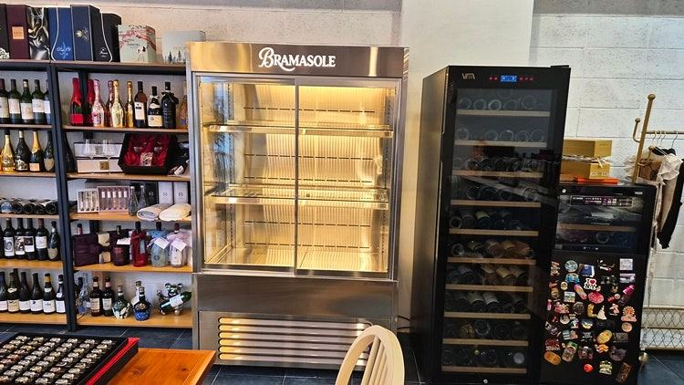
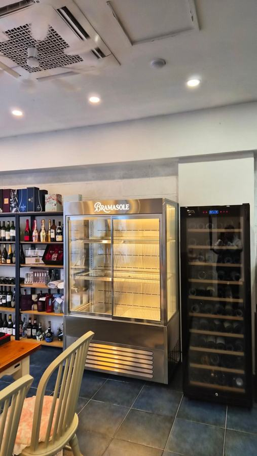
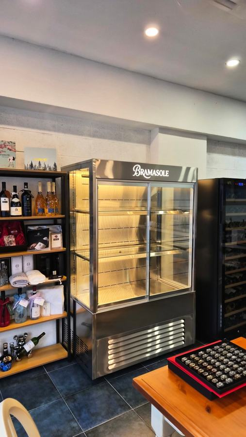
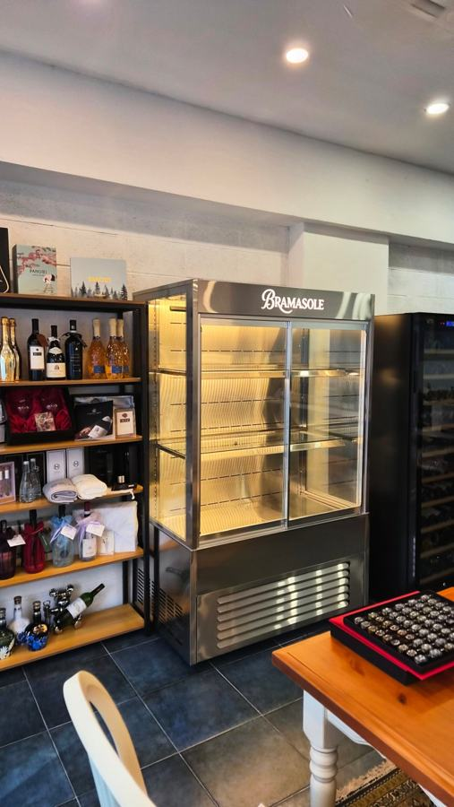
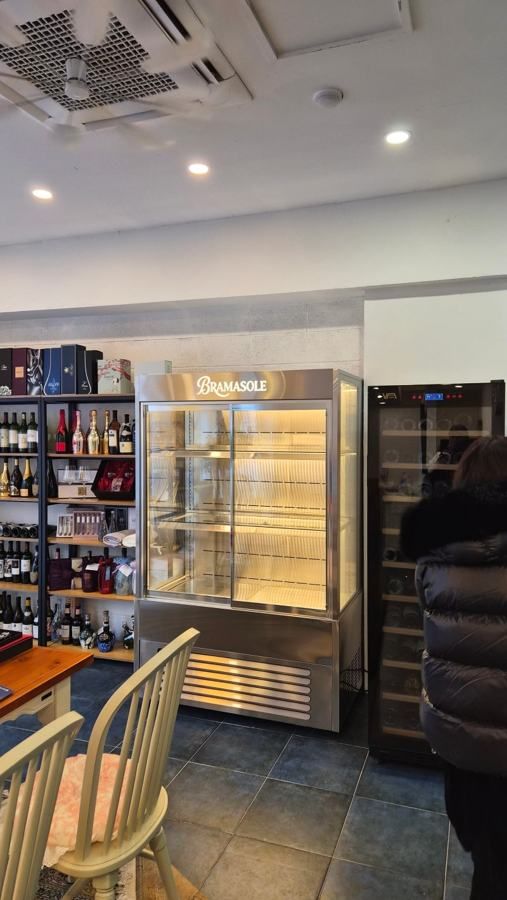
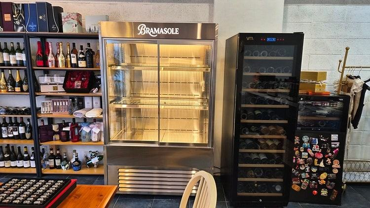
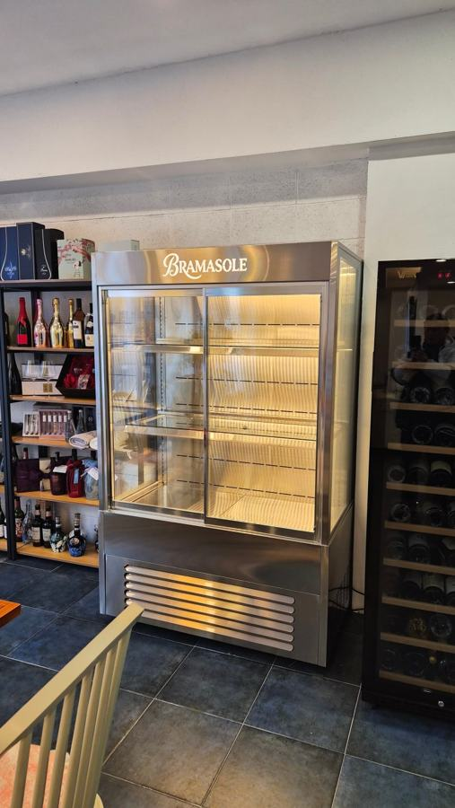
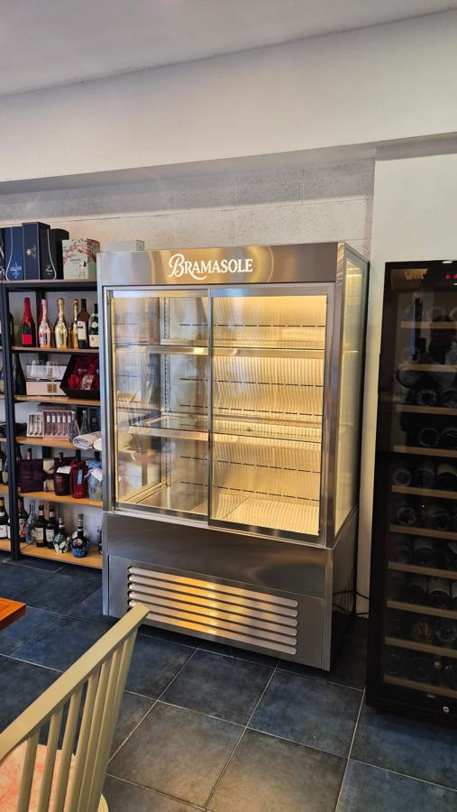
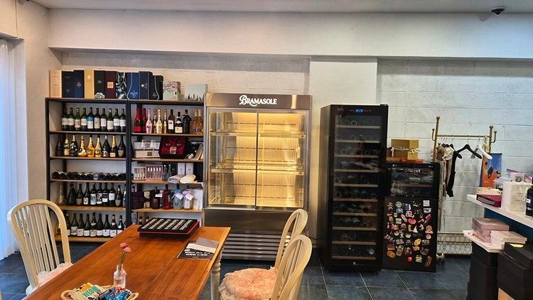
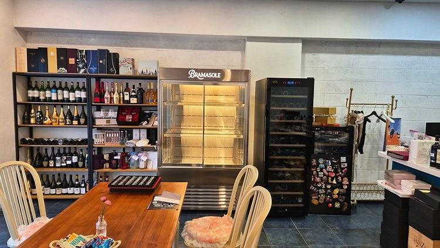

과일진열쇼케이스
과일쇼케이스 조명, 껍질 색과 윤기를 살리는 빛 고르기

과일쇼케이스 조명은 너무 차갑지 않은 중간 색온도로 껍질 색과 윤기를 살리고, 정면이 아니라 조금 위나 뒤에서 고르게 비추는 것이 기본입니다. 과일은 수분이 생명이라 조명 열이 한 곳에 몰리지 않는 구조인지도 꼭 확인하셔야 합니다.
안녕하세요. 과일가게와 청과 코너 쇼케이스를 맞춤 제작하는 한성쇼케이스입니다.
새벽 시장에서 좋은 과일을 골라 와 진열했는데, 쇼케이스 안에 넣고 보니 딸기는 탁해 보이고 샤인머스캣은 누렇게 보인다는 사장님들이 계십니다.
과일 상태가 아니라 빛이 문제인 경우가 많습니다.
과일은 색이 곧 신선도의 증거입니다. 손님은 껍질 색과 윤기를 보고 잘 익었는지, 오늘 들어온 물건인지를 판단하시죠.
조명이 그 판단을 돕기도 하고 방해하기도 합니다.
오늘은 과일쇼케이스 조명을 고를 때 색, 위치, 발열 세 가지를 어떻게 보면 되는지 정리해 보겠습니다.
1. 색온도는 과일 색을 그대로 보여 주는 쪽으로
너무 푸르고 차가운 빛은 붉은 과일을 탁하게, 노란 과일을 창백하게 만듭니다. 반대로 지나치게 노란 빛은 초록 과일이나 흰 속살이 보이는 컷과일을 덜 신선해 보이게 할 수 있습니다.
그래서 과일쇼케이스는 한쪽으로 치우치지 않은 중간 색온도를 기준으로 잡고, 매장에서 주로 파는 과일 색에 맞춰 조정하는 것이 좋습니다.
딸기·체리처럼 붉은 과일이 중심인지, 포도·키위처럼 초록이 중심인지 먼저 나눠 보세요.
- 대표 과일 세 가지를 같은 빛 아래에 놓고 비교해 보세요.
- 컷과일 컵은 속살 색이 자연스럽게 보이는지 확인하세요.
2. 그림자 없이 고르게 비추는 위치
과일은 둥글고 높이가 제각각이라 정면에서 강하게 비추면 앞쪽 과일만 반짝이고 뒤쪽은 그림자에 묻힙니다.
조명을 조금 위쪽이나 뒤쪽에 두고 선반 전체로 빛이 퍼지게 하면 바구니 안쪽까지 고르게 보입니다.
단이 여러 개인 쇼케이스라면 윗단 조명만으로 아랫단까지 밝히기 어렵습니다. 손님 눈높이 칸과 허리 높이 칸에 각각 빛이 닿는지 확인하고, 필요하면 칸마다 조명을 나눠 넣는 구성을 검토해 보세요.
유리 반사도 함께 보셔야 합니다. 조명이 손님 쪽 유리에 비쳐 번쩍이면 정작 과일이 잘 안 보입니다.
쇼케이스 앞에 서서 실제 손님 키 높이에서 한 번 들여다보고 각도를 정해 보세요.


3. 조명 열과 과일 수분
과일은 수확한 뒤에도 호흡을 하며 수분이 계속 움직입니다. 발열이 큰 조명이 한 점에 몰려 있으면 그 아래 과일만 표면이 빨리 마르거나, 주변과 온도 차가 생겨 무름이 앞당겨질 수 있습니다.
그래서 과일쇼케이스에는 발열이 낮은 LED를 쓰고, 한 곳만 강하게 비추지 않도록 배치하는 것이 중요합니다.
조명이 교체 가능한 구조인지도 함께 확인해 두시면 나중에 관리가 편합니다.
- 조명 바로 아래 과일이 유난히 빨리 마르지 않는지 보세요.
- 발열이 낮은 조명인지, 교체가 쉬운 구조인지 확인하세요.
4. 구역마다 빛을 다르게
과일가게 쇼케이스는 통과일 구역, 선물용 박스 구역, 컷과일·주스 구역으로 나뉘는 경우가 많습니다. 통과일은 윤기가 살아나는 빛이, 랩이나 뚜껑으로 포장된 컷과일은 포장 반사를 줄이는 빛이 어울립니다.
선물용 박스는 과일보다 포장이 먼저 보이니 라벨과 리본이 선명하게 보이는 쪽으로 맞추시면 됩니다. 구역을 미리 정해 주시면 칸마다 조명 위치와 밝기를 다르게 설계할 수 있습니다.
체크리스트
- 주력 과일의 색 계열
- 너무 차갑거나 노랗지 않은 색온도
- 위·뒤에서 고르게 퍼지는 조명 위치
- 칸별 밝기 차이
- 발열이 낮은 조명과 교체 구조
- 통과일·포장·컷과일 구역 구분
현장에서 자주 보는 경우: 조명 색 때문에 상품이 창백해 보일 때
온장쇼케이스를 쓰는 분식집과 베이커리에서도 비슷한 고민을 자주 듣습니다. 같은 튀김과 빵인데 너무 차가운 빛 아래에서는 창백해 보이고, 조명을 바꾸자 훨씬 먹음직스럽게 보였다는 경우입니다.
이때 점검하는 것은 세 가지입니다. 노란빛이 살짝 도는 중간 색온도인지, 정면이 아니라 조금 위나 뒤에서 비춰 그림자를 줄이는지, 발열이 큰 조명이 온도 설정과 겹쳐 특정 구간을 과하게 데우지 않는지입니다.
상품은 다르지만 색과 윤기가 판매를 좌우한다는 점에서 과일쇼케이스 조명에도 같은 기준이 적용됩니다.










자주 묻는 질문
과일쇼케이스 조명을 핑크빛으로 하면 더 신선해 보이나요?
붉은 과일은 돋보일 수 있지만 다른 색 과일까지 색이 바뀌어 보일 수 있습니다. 여러 과일을 함께 판다면 자연스러운 색을 기준으로 잡고, 붉은 과일 구역만 따로 조정하는 편이 안전합니다.
기존 쇼케이스에 칸별 조명을 추가할 수 있나요?
구조와 배선에 따라 가능 여부가 달라집니다. 제품 사진과 치수를 보내 주시면 추가 설치가 가능한지 먼저 확인해 드립니다.
조명 때문에 과일이 빨리 무를 수도 있나요?
발열이 큰 조명이 한 곳에 몰려 있으면 그 주변 과일이 빨리 마를 수 있습니다. 발열이 낮은 LED를 고르게 배치하고, 내부 수분 환경을 함께 관리해 주시는 것이 좋습니다.
매장 조건에 맞춰 만드는 한성쇼케이스
원하시는 제품 사진과 설치할 공간 사진만 보내 주셔도 매장에 맞는 구성을 추천해 드립니다.
- 전국 240여 개 A/S 전담 센터 운영
- 본사 대량 자재 매입으로 품질 대비 합리적인 가격
- 유럽제·삼성 냉각 콤프레셔 적용
- 국내 최초 쇼케이스 전문 디자이너 상주
매장 폭과 원하는 진열 구성을 알려 주세요. 실측과 견적을 안내해 드립니다.
031-986-2458